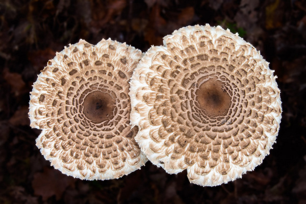

Érdekességek
Jelenlegi adatok szerint a világ legnagyobb és legidősebb élőlénye (legalább 2400 éves!) épp egy, a kalapos gombák fajába tartozó, farontó gombák közé sorolható Mézgomba (Armillaria ostoyae). Ezt az egyedet Amerikában, Oregon államban fedezték fel 2001-ben. A mérések szerint mintegy 9,65 négyzetkilométernyi területet borít be ez a föld alatt élő, a fák gyökerein növekedő gombafajta. Ez az érték megfelel körülbelül 1600 darab focipálya méretének!
A gombák nem tartoznak sem a növények közé, sem az állatok közé, egy külön élőlénycsoportot alkotnak,
A gombák 90 százalékban vizet tartalmaznak,
A gombák spóráit kitinréteg borítja, ugyanaz az anyag, ami a rákok és bogarak páncéljában is megtalálható,
Néhány gombafaj képes sötétben ’világítani’(fluoreszcencia),